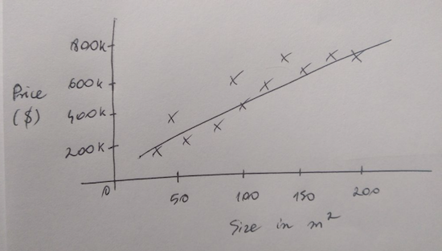
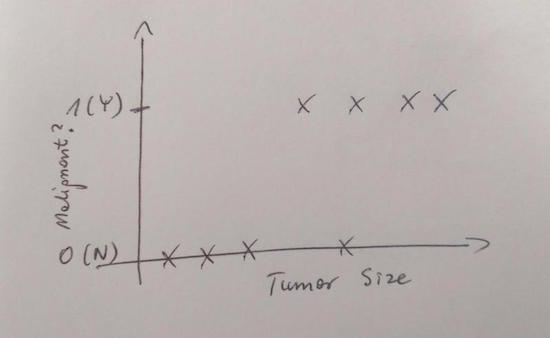

On supervised and unsupervised learning. Gradient descent demystified.
Machine learning is a broad field with plenty of applications. In order to get a better overview of them, let's assume that there are two types of problems - solved either with supervised or unsupervised learning. That said, please note this is just one of the several possible ways to categorise ML tasks.
So what are the main differences between these two? In supervised learning, an algorithm is being fed an already labelled data (pairs called input and output also known as training data). Its job is to come up with a formula or simply 'learn' the rules that map inputs to output. A good example would be an algorithm which can predict whether a tumor is malignant or benign based on e.g. tumor size.
On the other hand, in unsupervised learning the training step is omitted, there isn't any labelled data but instead an algorithm's task is to find the structure in the input data. For instance, let's say we are selling whisky and we've gathered a spreadsheet containing all the purchases made by our clients. We would like to mail them a newsletter including the info about our currently discounted alcohol beverages. We run promotions often and don't want to spam our customers, so we will use the power of unsupervised learning. How? By clustering the clients into groups which are more or less interested in certain types of whisky. This way, only those more likely to care, are going to receive an email.
Unsupervised learning deserves its own post, so worry not, clusters, centroids and more importantly - becoming a marketing ninja will be covered soon. For now, let's dive a little deeper into supervised learning and its two main categories: regression and classification.
Regression is a term coined by biologist, who discovered that the heights of descendants of tall ancestors tend to regress down towards a normal average. Cool huh? Anyway, the regression analysis is widely used in statistics and we will benefit from it too. Imagine we work as a junior real estate agent. Sometimes our job is to estimate the price of a house. We don't have much knowledge about housing prices yet but luckily we hold documents with training data. They include houses' area and a price and it should be enough to find a formula that will allow us estimate a price of any house.

The line is our hypothesis function whereas crosses denote single training data examples
We are now going to use linear regression to predict a single output value. The notion that we guess the price for a new house, one we don't have data about, is resolved around the hypothesis function. In our case, this is a straight line which tries to fit (cross, touch) as many training examples as possible. Its formula is the same as the formula for a linear function, but with slightly different notation.
$h_\theta(x) = \theta_0 + \theta_1 x$ $\theta_0 , \theta_1 \hbox{ - adjustable params}$
The parameters determine the shape of the function. Our job is to make sure they are correct, less accurate values will result in false output prediction. Since there are no constraints on the parameters, we could pick a few starting values and using trial and error determine whether they are correct. In simpler scenarios, we can always take a glance at a chart. This technique is not foolproof but luckily there is a better option - use cost function.
$J(\theta_0, \theta_1) = \dfrac {1}{2m} \displaystyle \sum_{i=1}^m \left (h_\theta (x^{(i)}) - y^{(i)} \right)^2$
Without going into details, this function takes theta parameters and returns a value. The lower this value is, the better params we selected. We also want to avoid a situation when the hypothesis function is underfitted, which means that it aligns with several training examples only. Our final ingredient is going to be gradient descent. This algorithm has one job, to find the suitable theta parameters.
While there's an extensive article about gradient descent on wikipedia I will try to be as brief as I can get. Gradient descent is a general optimization algorithm used for finding local maximum or minimum values. You might be familiar with e.g. hill-climbing algorithm or overall, greedy algorithms. These algorithms are known for always choosing the best possible step whereas sometimes the slighly worse solution in few steps earlier, could lead to a totally different, much better final result. Gradient descent uses the same approach, either make sure that there is only one local minimum or seed it with the correct starting values.

Gradient descent algorithm - depending on a starting point, a different local optimum is found
The cost function combined with the gradient descent is a duo that delivers. If everything went fine, we got a proper pair of theta1, theta2 values and the hypothesis function can be used to predict house prices with very solid confidence.
Whereas linear regression focuses on producing a continuous output, classification is about discrete values representing different groups. Choosing which tumors are more likely to be malignant or benign is nothing else but a classification task. It assigns cases to one of two groups 0 - bening and 1 - malignant. A simple chart with a training data drawn would look like this:

Logistic regressions (yeah, regression algorithm for classification task - that's confusing) is a go-to method for such cases. If you were reading carefully, you now know that when it comes to linear regression, we need a hypothesis and a cost functions, with parameters for the latter calculated by gradient descent. Logistic regression is the same, just the formulas for the functions are slightly modified.
We are going to assign labels 0(benign) or 1(malignant) to patients' cases so it would be optimal if the hypothesis function returned values between 0 and 1. A linear function can't do that so allow me to introduce the sigmoid function!

The sigmoid function
This function asymptotes at 0 and 1 and has everything we need. If the result is let's say 0.3, it means that it has 30% chance of belonging in the group 1 and 70% chance of being in the group 0. As a result, it gets labelled as benign tumor.
The cost function is also going to need a slight tweaking. Combined with the gradient descent, we will should be able to find nice parameters that will allow for sigmoid function to fit the data well.
Both linear and logistic regression are standard tools in the world of supervised learning. The examples in this post used only one variable for calculating the hypothesis function but we can easily use more. However finding proper theta parameters will not be as easy. It often is a mundane process, but when we finally run an algorithm and it works, the satisfaction is definitely there.
Sources:
[1] Wikipedia
[2] Coursera